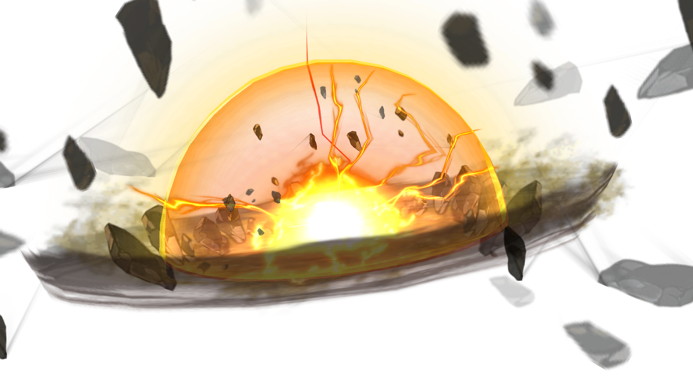

B02 / 053 · 连续动作抽帧
1 / 25311 / 25321 / 25331 / 25341 / 25351 / 25361 / 25371 / 25381 / 25391 / 253101 / 253111 / 253121 / 253131 / 253141 / 253151 / 253161 / 253171 / 253181 / 253191 / 253201 / 253211 / 253221 / 253
231 / 253241 / 253251 / 253